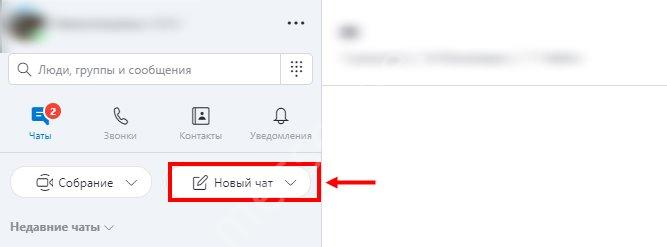
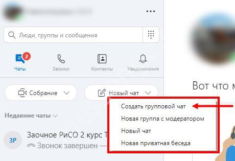
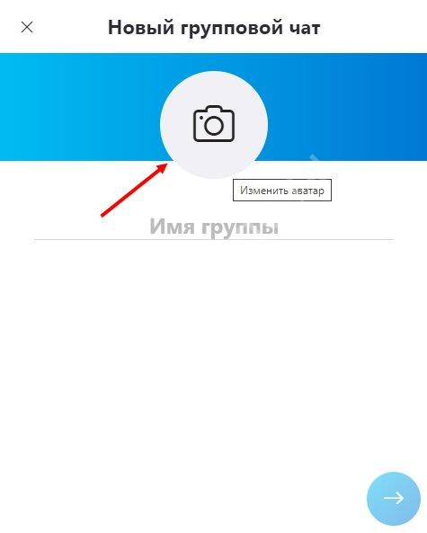
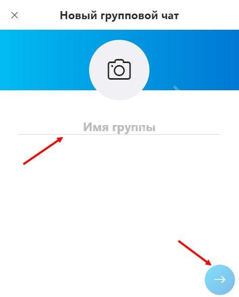
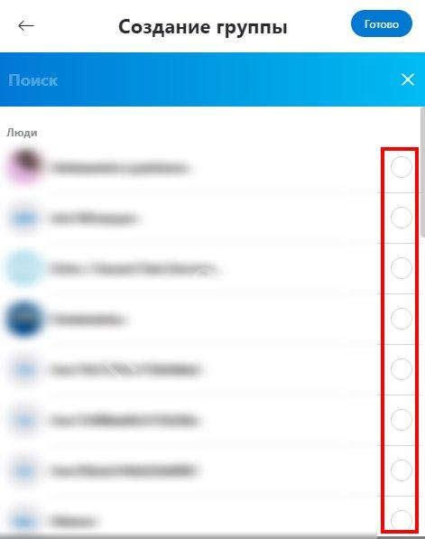
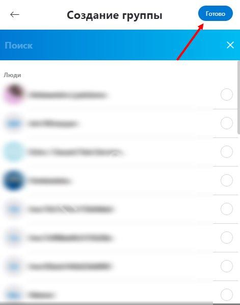
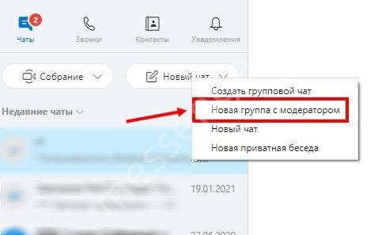

Как сделать групповой чат в Скайпе? Самое краткое и простое пособие
Как создать групповую беседу?
Нам предстоит разобраться, что такое чат в Скайпе и как им пользоваться! Начнем, не откладывая. Это специальная группа, куда можно добавить большое количество человек с целью дальнейшего общения. Тему вы выбираете сами – личная беседа, рабочая или учебная группа, переписка по интересам…
Сразу переходим к тому, как создать беседу в Скайпе – функционал очень прост и понятен:
- Откройте мессенджер;
- Нажмите на иконку «Новый чат» в виде планшета с карандашом; 
- Появится меню, где вы можете выбрать нужное действие. 
- Нажмите на значок фотоаппарата, чтобы обновить изображение профиля беседы (это не обязательно, можете вернуться к настройкам позже); 
- Введите название и нажмите на кнопку «Далее»; 
- Теперь выберите контакты, которые хотите добавить – список появится на экране. Можно пролистывать список вручную или воспользоваться поисковой строкой; 
- Нажмите «Готово», чтобы начать общение. 
Мы хотим разобраться, как в Скайпе создать групповой чат, поэтому нажимаем на соответствующую кнопку. Что делать дальше?
Групповой чат в Скайпе может включать в себя до 600 участников! Если вы добавили не всех, кого хотели – не переживайте, позже вы сможете отправить приглашение новым пользователям.
Вы можете общаться через аудиоконференцию (максимальное число участников – 100) или создать видеочат (максимум 10 подключенных экранов).
Как создать группы под управлением администратора?
Но это еще не все! Как в Скайпе создать чат, который будет управляться администратором? Когда вы нажимаете на меню создания, можете заметить другую кнопку, «Новая группа с модератором». Это групповая беседа, которая рассчитана на такое же количество человек. Но один из них (вы) станет модератором и администратором, а другие – рядовыми пользователями с ограниченным функционалом. Позже вы сможете повышать других людей до админа, назначая определенные полномочия.
Эта опция пригодится, если общение нужно контролировать – например, во время проведения учебного класса!
А как найти чат в Skype, если вас уже добавили в группу? Просто впишите ее название в поисковую строку – она находится наверху слева!